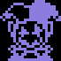

Jevil is an upcoming vessel in DF CONNECTED v2.8.0.
He's been in the vessel menu for a long time (and still is), but he's never been officially playable as he was intended to have a boss battle before being unlocked.
Emphasis on officially. He's actually been playable in offline mode this entire time through save editing (by simply changing a string to "Jevil", no less), and you may have seen hackers using him in online mode.
And by "this entire time", I mean since v2.0.0. He wasn't even shown in the vessel menu in that version.
That doesn't mean you can just go and use him in any version, however. There have been some measures to prevent him from being used:
- In any version after v2.5.0, his sprites are replaced with Harlow's.
- In any version after v2.7.0, using him as your vessel will crash the game. Not due to an actual error, as no crash message pops up, but specifically to prevent hackers from using him.
As a vessel
Prior to v2.5.0, the Jevil vessel shows all four overworld sprites, as seen below (ripped from screenshots):
He doesn't have an emote (though he's getting three in v2.8.0).
He also doesn't have any alternate skins.
His full battle sprite isn't normally seen in-game (though most of it is visible in the vessel menu), but it has already been shown in teasers. Here's a rip from the UNDEREVENT 2023 Trailer:
As a partner
Jevil's partner effect is Bonus EXP. He has one partner bonus, that being with Joker.
His P-Action flavor text reads:

As a post-v2.7.9 partner
His portrait is visible in the STAT menu:
This is his icon in the battle HUD:

His P-Action is unsurprisingly named J-Action and his associated color is #8c7ce0.